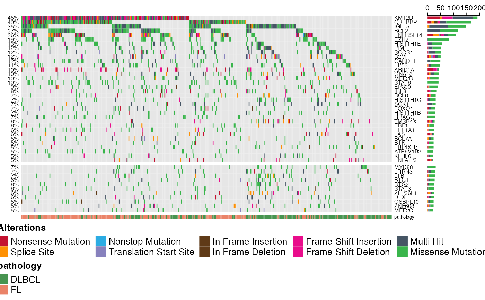
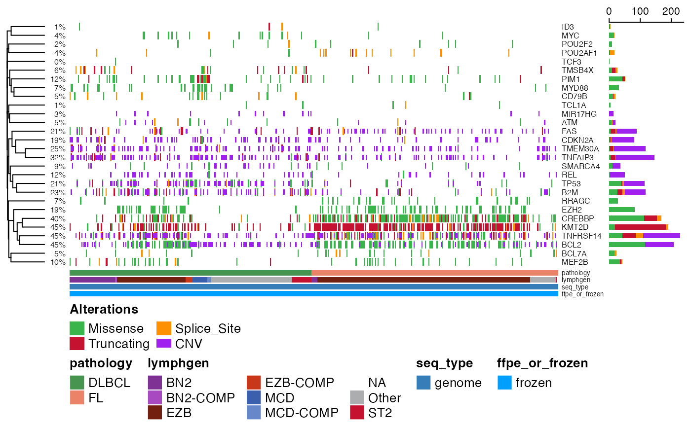
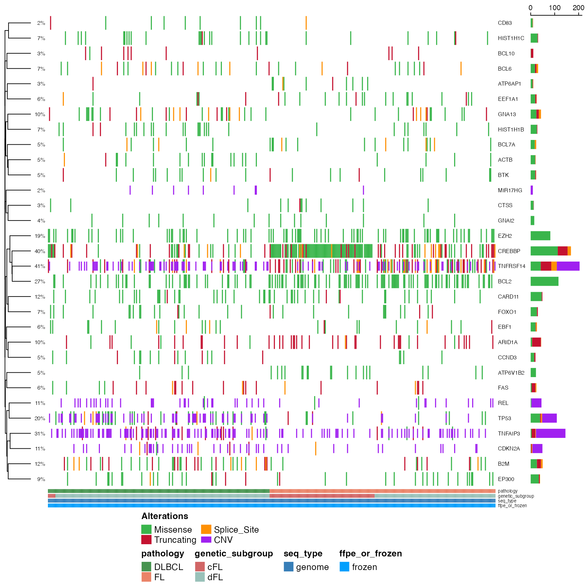
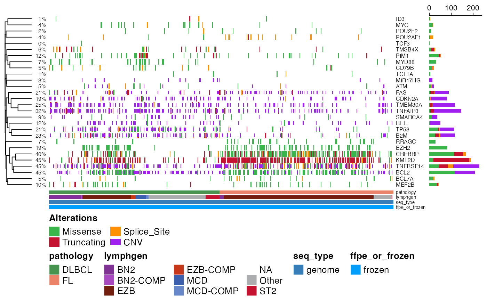
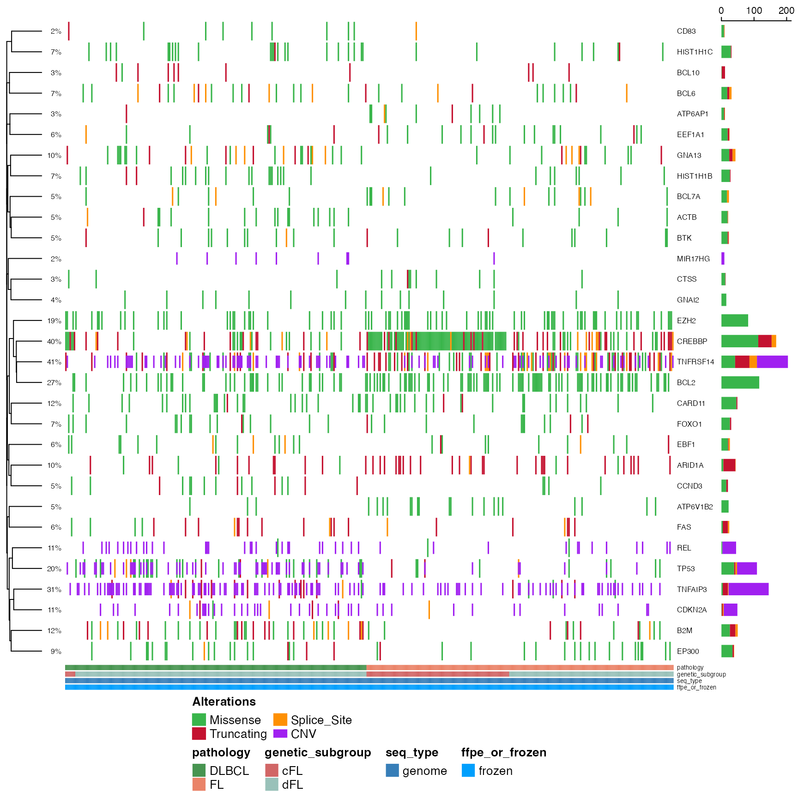

PrettyOncoplot
prettyOncoplot.RdCreate a highly customizable oncoplot.
prettyOncoplot(
maf_df,
gene_cnv_df,
binned_cnv_df,
genes,
include_noncoding = NULL,
keepGeneOrder = FALSE,
keepSampleOrder = FALSE,
highlightHotspots = FALSE,
these_samples_metadata,
genes_CN_thresh,
metadataColumns,
numericMetadataColumns,
expressionColumns = c(),
numericMetadataMax,
sortByColumns,
sortByGenes,
arrange_descending = FALSE,
removeNonMutated = FALSE,
minMutationPercent = 0,
mutAlpha = 1,
recycleOncomatrix = FALSE,
splitColumnName,
splitGeneGroups,
showTumorSampleBarcode = FALSE,
groupNames,
hide_annotations,
hide_annotations_tracks = FALSE,
annotate_specific_genes = FALSE,
this_forest_object = NULL,
custom_colours = NULL,
hideTopBarplot = TRUE,
tally_all_mutations = FALSE,
tally_all_mutations_max = 1000,
hideSideBarplot = FALSE,
box_col = NA,
annoAlpha = 1,
legend_direction = "horizontal",
ylim = NULL,
legend_position = "bottom",
legend_row = 3,
legend_col = 3,
metadataBarHeight = 1.5,
metadataBarFontsize = 5,
metadataSide = "bottom",
legendFontSize = 10,
fontSizeGene = 6,
annotation_row = 2,
annotation_col = 1,
verbose = FALSE,
cluster_rows = FALSE,
cluster_cols = FALSE,
clustering_distance_rows = "binary",
clustering_distance_cols = "binary",
split_rows_kmeans,
split_columns_kmeans,
dry_run = FALSE,
simplify_annotation = FALSE,
simplify_bg_colour = NA,
stacked = FALSE,
return_inputs = FALSE,
gap = 0,
use_raster = NULL,
plot_width = NULL,
plot_height = NULL,
show_any_legend = TRUE,
pct_side = "left",
pctFontSize = 6,
row_names_side = "right",
show_pct = TRUE,
hide_annotation_name = FALSE,
cnv_df
)Arguments
- maf_df
A maf as data frame containing the mutations you want to plot.
- gene_cnv_df
An optional data frame of CN status for genes you want included (rows = sample_id, columns = Hugo_Symbol) See [GAMBLR.results::get_cnv_and_ssm_status] for more information.
- binned_cnv_df
An optional data frame with the genome-wide CN status of your samples in genomic bins see [GAMBLR.utils::segmented_data_to_cn_matrix] for more information.
- genes
An optional vector of genes to restrict your plot to.
- include_noncoding
List of non-coding regions to be included, default is NULL. Specify like this: include_noncoding=list("NFKBIZ" = c("3'UTR"), "HNRNPH1" = "Splice_Region")
- keepGeneOrder
Set to TRUE if you want to preserve the gene order specified.
- keepSampleOrder
Set to TRUE if you want to preserve the sample order specified. The default value is FALSE and respects all of the specified ordering.
- highlightHotspots
Set to TRUE to highlight hot spots. Default is FALSE.
- these_samples_metadata
Data frame containing metadata for your samples.
- genes_CN_thresh
A named vector specifying the genes whose copy number status should be incorporated. The names must be the gene symbols and the values should be integers that indicate the maximum or minimum CN states to consider for that gene. For example: 'REL'=4 would show CN 4 or higher; 'TP53'=1 would show heterozygous and homozygous deletions 'BCL2'=3 would show single-copy gains or higher
- metadataColumns
A vector containing the categorical column names you want to plot below.
- numericMetadataColumns
A vector containing the numeric columns you want to plot below.
- expressionColumns
Optional variable for retreiving expression values for a specific gene(s).
- numericMetadataMax
A numeric vector of cutoffs to apply to numeric columns above.
- sortByColumns
A vector containing the column names you want to sort columns (patients) on.
- arrange_descending
A Boolean parameter. Set to TRUE to sort metadata in descending fashion. Default is FALSE.
- removeNonMutated
Set to TRUE to drop unmutated cases.
- minMutationPercent
Only genes mutated in more than minMutationPercent % patients will be included.
- mutAlpha
Optional alpha to apply to mutation colours.
- recycleOncomatrix
Set to TRUE most of the time to reuse the oncomatrix saved by maftools.
- splitColumnName
Optional argument to indicate which metadata column to split on.
- splitGeneGroups
Split genes into groups for better seperation (between different gene-groups) in prettyOncoplot.
- showTumorSampleBarcode
Optional argument for showing tumor barcode. Default is FALSE.
- groupNames
optional vector of group names to be displayed above heatmap. Should be the same length as the number of groups that will be shown. Default is NULL (no labels).
- hide_annotations
Hide annotations for specifc ashms. argument takes a list with annotations.
- hide_annotations_tracks
When hide_annotations is supplied with a list of columns, this parameter can optionally also not display those columns as the annotation track. Accepts TRUE and FALSE (default).
- annotate_specific_genes
Optional argument, specifying whether the features should be labelled according to their significance in one of the pathologies. Default is FALSE (no annotation).
- this_forest_object
If annotate_specific_genes is specified, this arguments takes the output of GAMBLR::prettyForestPlot directly to determine the annotations.
- custom_colours
Provide named vector (or named list of vectors) containing custom annotation colours if you do not want to use standardized pallette.
- hideTopBarplot
Optional argument for removing top bar plot. Default value is TRUE.
- tally_all_mutations
Optional argument. Set to TRUE to tally all mutations. Default is FALSE.
- tally_all_mutations_max
Optional argument. Default is 1000.
- hideSideBarplot
Optional argument for removing side bar plot. Default value is FALSE.
- box_col
Colour of boxes for outlining mutations (can be problematic with larger oncoprints).
- annoAlpha
Optional alpha to apply to annotation colours.
- legend_direction
Direction of legend, default is "horizontal".
- ylim
Limit for y-axis.
- legend_position
Position of legend, default is "bottom".
- legend_row
Fiddle with these to widen or narrow your legend.
- legend_col
Fiddle with these to widen or narrow your legend.
- metadataBarHeight
Optional argument to adjust the height of bar with annotations. The default is 1.5.
- metadataBarFontsize
Optional argument to control for the font size of metadata annotations. The default is 5.
- legendFontSize
Font size for legend, default is 10.
- fontSizeGene
Font size for gene labels (default 6).
- annotation_row
Row for annotations, default is 2.
- annotation_col
Column for annotations, default is 1.
- verbose
Set to TRUE to enable verbose mode (debugging messages.
- cluster_rows
Force clustering of genes with correlated mutation patterns
- cluster_cols
Force clustering of patients with correlated mutation patterns
- clustering_distance_rows
Distance metric used for clustering when cluster_rows = TRUE
- clustering_distance_cols
Distance metric used for clustering when cluster_cols = TRUE
- split_rows_kmeans
K value for k-means clustering on rows
- split_columns_kmeans
K value for k-means clustering on columns
- dry_run
Set to TRUE to more efficiently view the clustering result while debugging cluster_rows/clustering_distance_rows
- simplify_annotation
Collapse/group the variant effect categories to only 3 options. This is a much faster option for when many patients/genes are included.
- simplify_bg_colour
When simplify_annotation is called, adjust the color of the background by passign a value to this argument. Default is NA.
- stacked
Deprecated. See [GAMBLR.viz::prettyStackedOncoplot] for this functionality.
- return_inputs
Optional flag to return the plot and various other internal objects such as the underlying mutation matrix.
- gap
Size of gap between columns represented as a proportion of the full width of the column. Default 0 (no gap).
- use_raster
Whether to rasterize image
- show_pct
TRUE by default. Set to FALSE to hide percentage.
- hide_annotation_name
Default: FALSE
- cluster_numeric_rows
Deprecated. See [GAMBLR.viz::prettyStackedOncoplot] for this functionality.
- cluster_numeric_cols
Deprecated. See [GAMBLR.viz::prettyStackedOncoplot] for this functionality.
- numeric_heatmap_type
Deprecated. See [GAMBLR.viz::prettyStackedOncoplot] for this functionality.
- numeric_heatmap_location
Deprecated. See [GAMBLR.viz::prettyStackedOncoplot] for this functionality.
Value
By default, nothing unless return_inputs is specified, in which case it returns a named list that contains different things depending on how the function was run At the very least, it will contain the Heatmap object a logical matrix indicating the mutation status of each gene and patient shown in the output.
Details
Generatss an oncoplot (a.k.a. oncoprint) that is pretty using ComplexHeatmap. The metadata is expected to follow the structure and column naming used in GAMBL. If you provide your own non-GAMBL samples and metadata, you must include at least the following columns with these names. The first one should match the Tumor_Sample_Barcode in the MAF object or onco_matrix you provide. sample_id, pathology
Examples
suppressMessages(
suppressWarnings({
# load packages
library(grid)
library(dplyr)
library(GAMBLR)
# Using GAMBLR.open
maf_metadata <- GAMBLR.open::get_gambl_metadata(
seq_type_filter = "genome") %>%
dplyr::filter(pathology %in% c("FL", "DLBCL"),
study == "FL_Dreval")
maf_data <- get_coding_ssm(
these_samples_metadata = maf_metadata
)
}))
# define some genes of interest
fl_genes <- GAMBLR.data::lymphoma_genes %>%
dplyr::filter(FL_Tier == 1) %>%
pull(Gene)
dlbcl_genes <- GAMBLR.data::lymphoma_genes %>%
dplyr::filter(DLBCL_Tier == 1, !Gene %in% fl_genes) %>%
pull(Gene)
genes <- c(fl_genes, dlbcl_genes)
# For splitting into gene sets
split_genes <- c(rep("FL", length(fl_genes)),
rep("DLBCL", length(dlbcl_genes)))
names(split_genes) <- genes
suppressMessages(
suppressWarnings({
prettyOncoplot(
maf_df = maf_data, genes = genes,
these_samples_metadata = maf_metadata,
splitGeneGroups = split_genes,
minMutationPercent = 5
)
}))

# Was that too slow for you? Enable the simplify_annotation
# parameter for a quicker result.
suppressMessages(
suppressWarnings({
prettyOncoplot(
maf_df = maf_data, genes = genes,
these_samples_metadata = maf_metadata,
splitGeneGroups = split_genes,
minMutationPercent = 5,
simplify_annotation = TRUE
)
}))
 # Want to include copy number? You have two options.
# Option 1:
# Incorporate CN status of specific genes into your oncoplot
# along with mutations.
# There are two ways to go about this.
# The original way involves using the helper function get_cnv_and_ssm_status
gene_regions <- data.frame(
gene_id = c(
"REL", "CDKN2A",
"MIR17HG", "TP53", "ATM", "FAS", "SMARCA4", "B2M", "TNFRSF14",
"TMEM30A", "TNFAIP3", "BCL2"
),
cn_thresh = c(4, 1, 4, 1, 1, 1, 1, 1, 1, 1, 1, 3)
)
# this data frame specifies the threshold and directionality for
# each gene's copy number state to display on the oncoplot.
# Amplifications will be shown for REL and MIR17HG, gains
# for BCL2, deletions for the rest
print(gene_regions)
#> gene_id cn_thresh
#> 1 REL 4
#> 2 CDKN2A 1
#> 3 MIR17HG 4
#> 4 TP53 1
#> 5 ATM 1
#> 6 FAS 1
#> 7 SMARCA4 1
#> 8 B2M 1
#> 9 TNFRSF14 1
#> 10 TMEM30A 1
#> 11 TNFAIP3 1
#> 12 BCL2 3
suppressMessages(
suppressWarnings({
gene_cnv <- get_cnv_and_ssm_status(
only_cnv = "all",
these_samples_metadata = get_gambl_metadata(),
genes_and_cn_threshs = gene_regions
)
}))
suppressMessages(
suppressWarnings({
prettyOncoplot(
maf_df = maf_data, genes = c(
"CREBBP", "EZH2", "MYD88",
"TCF3", "BCL2", "BCL7A",
"MEF2B", "POU2F2", "POU2AF1",
"ID3", "MYC",
"RRAGC", "TCL1A", "KMT2D",
"PIM1", "CD79B", "TMSB4X",
"TMEM30A", "TNFAIP3"
),
these_samples_metadata = maf_metadata,
cluster_rows = T,
metadataColumns = c(
"pathology",
"lymphgen",
"seq_type",
"ffpe_or_frozen"
),
cluster_cols = F,
simplify_annotation = T,
cnv_df = gene_cnv,
sortByColumns = c("pathology", "lymphgen")
)
}))

# Option 2:
# The second way to incorporate copy number relies
# instead on a binned copy number matrix
# If you already have one on hand, this is clearly the preferred approach!
# First let's make one with the help of segmented_data_to_cn_matrix
all_segments <- get_cn_segments(these_samples_metadata = maf_metadata)
#> dummy segments are not annotated in the inputs
#> fill_missing_with parameter will be ignored
all_states_binned <- segmented_data_to_cn_matrix(
seg_data = all_segments,
strategy = "auto_split",
n_bins_split = 1000,
fill_missing_with = "avg_ploidy",
adjust_for_ploidy = TRUE,
these_samples_metadata = maf_metadata
)
# Note: adjust_for_ploidy = TRUE ensures the relative
# CN status is used for high-ploidy cases
# as before, we need to specify which genes we want
# CN events shown for and what direction (gain or loss)
# This is done a bit more easily with the genes_CN_thresh option.
CN_thresh <- c(
"REL" = 4,
"CDKN2A" = 1,
"MIR17HG" = 4,
"TP53" = 1,
"TNFRSF14" = 1,
"TNFAIP3" = 1
)
suppressMessages(
suppressWarnings({
prettyOncoplot(
maf_df = maf_data,
binned_cnv_df = all_states_binned,
genes_CN_thresh = CN_thresh,
genes = head(genes, 25),
these_samples_metadata = maf_metadata,
cluster_rows = T,
metadataColumns = c(
"pathology",
"genetic_subgroup",
"seq_type",
"ffpe_or_frozen"
),
cluster_cols = F,
simplify_annotation = T,
sortByColumns = c("pathology", "genetic_subgroup"),
minMutationPercent = 0
)
}))

# Want to include copy number? You have two options.
# Option 1:
# Incorporate CN status of specific genes into your oncoplot
# along with mutations.
# There are two ways to go about this.
# The original way involves using the helper function get_cnv_and_ssm_status
gene_regions <- data.frame(
gene_id = c(
"REL", "CDKN2A",
"MIR17HG", "TP53", "ATM", "FAS", "SMARCA4", "B2M", "TNFRSF14",
"TMEM30A", "TNFAIP3", "BCL2"
),
cn_thresh = c(4, 1, 4, 1, 1, 1, 1, 1, 1, 1, 1, 3)
)
# this data frame specifies the threshold and directionality for
# each gene's copy number state to display on the oncoplot.
# Amplifications will be shown for REL and MIR17HG, gains
# for BCL2, deletions for the rest
print(gene_regions)
#> gene_id cn_thresh
#> 1 REL 4
#> 2 CDKN2A 1
#> 3 MIR17HG 4
#> 4 TP53 1
#> 5 ATM 1
#> 6 FAS 1
#> 7 SMARCA4 1
#> 8 B2M 1
#> 9 TNFRSF14 1
#> 10 TMEM30A 1
#> 11 TNFAIP3 1
#> 12 BCL2 3
suppressMessages(
suppressWarnings({
gene_cnv <- get_cnv_and_ssm_status(
only_cnv = "all",
these_samples_metadata = get_gambl_metadata(),
genes_and_cn_threshs = gene_regions
)
}))
suppressMessages(
suppressWarnings({
prettyOncoplot(
maf_df = maf_data, genes = c(
"CREBBP", "EZH2", "MYD88",
"TCF3", "BCL2", "BCL7A",
"MEF2B", "POU2F2", "POU2AF1",
"ID3", "MYC",
"RRAGC", "TCL1A", "KMT2D",
"PIM1", "CD79B", "TMSB4X",
"TMEM30A", "TNFAIP3"
),
these_samples_metadata = maf_metadata,
cluster_rows = T,
metadataColumns = c(
"pathology",
"lymphgen",
"seq_type",
"ffpe_or_frozen"
),
cluster_cols = F,
simplify_annotation = T,
cnv_df = gene_cnv,
sortByColumns = c("pathology", "lymphgen")
)
}))

# Option 2:
# The second way to incorporate copy number relies
# instead on a binned copy number matrix
# If you already have one on hand, this is clearly the preferred approach!
# First let's make one with the help of segmented_data_to_cn_matrix
all_segments <- get_cn_segments(these_samples_metadata = maf_metadata)
#> dummy segments are not annotated in the inputs
#> fill_missing_with parameter will be ignored
all_states_binned <- segmented_data_to_cn_matrix(
seg_data = all_segments,
strategy = "auto_split",
n_bins_split = 1000,
fill_missing_with = "avg_ploidy",
adjust_for_ploidy = TRUE,
these_samples_metadata = maf_metadata
)
# Note: adjust_for_ploidy = TRUE ensures the relative
# CN status is used for high-ploidy cases
# as before, we need to specify which genes we want
# CN events shown for and what direction (gain or loss)
# This is done a bit more easily with the genes_CN_thresh option.
CN_thresh <- c(
"REL" = 4,
"CDKN2A" = 1,
"MIR17HG" = 4,
"TP53" = 1,
"TNFRSF14" = 1,
"TNFAIP3" = 1
)
suppressMessages(
suppressWarnings({
prettyOncoplot(
maf_df = maf_data,
binned_cnv_df = all_states_binned,
genes_CN_thresh = CN_thresh,
genes = head(genes, 25),
these_samples_metadata = maf_metadata,
cluster_rows = T,
metadataColumns = c(
"pathology",
"genetic_subgroup",
"seq_type",
"ffpe_or_frozen"
),
cluster_cols = F,
simplify_annotation = T,
sortByColumns = c("pathology", "genetic_subgroup"),
minMutationPercent = 0
)
}))
